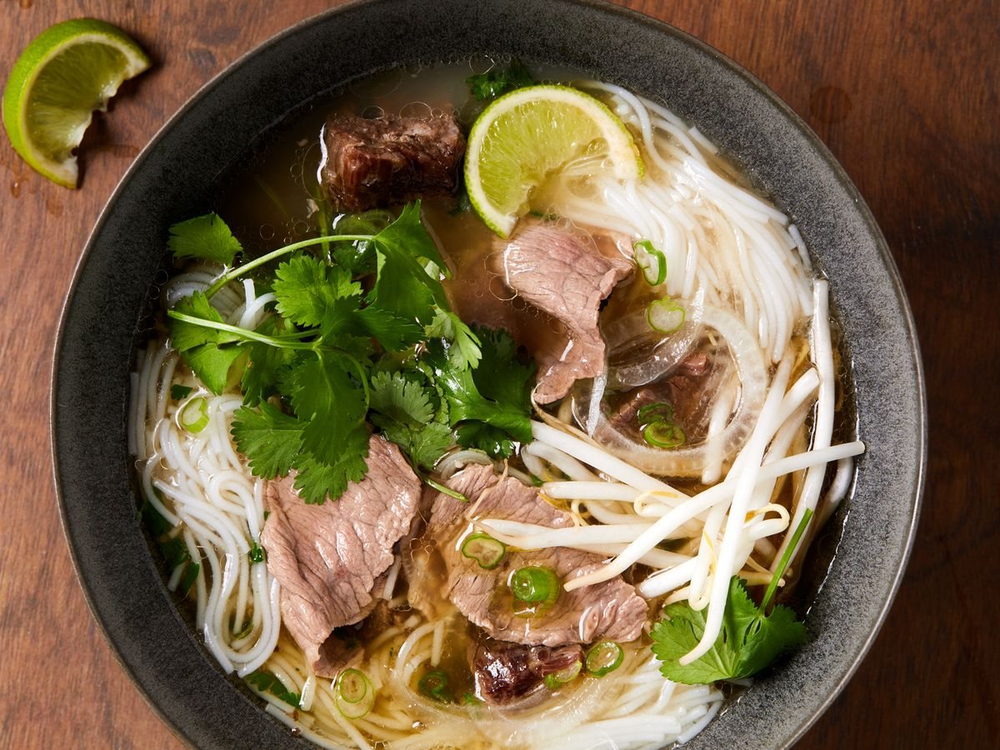

Pho Beef Soup

Description
The recipe yields two large dinner-size bowls or four smaller ones.
Ingredients
- 1 medium yellow onion, quartered, divided
- 1 (14.5 oz) can low-sodium beef broth (1¾ cups)
- 1 (14.5 oz) can low-sodium chicken broth (1¾ cups)
- 2 cups water
- 1 tablespoon fish sauce
- 1 (1-inch) piece fresh ginger, thinly sliced (no need to peel)
- 1 cinnamon stick
- 2 teaspoons sugar
- 1 star anise pod
- 4 whole cloves
- 7 oz flat rice noodles
- 8 oz very thinly sliced beef, such as flat iron or flank steak
- Salt, to taste
- ½ cup bean sprouts
- ¼ cup chopped fresh cilantro leaves
- Lime wedges, for serving
- Hoisin sauce and sriracha, for serving
Assemble the pho
-
Cook the rice noodles according to the package instructions while the broth simmers.
-
Once the broth is ready, briefly cook the noodles and beef in the broth and divide into bowls.
-
Ladle the hot broth over the noodles and beef, garnish with bean sprouts and fresh cilantro.
-
Pass lime wedges, hoisin sauce, and sriracha sauce at the table.